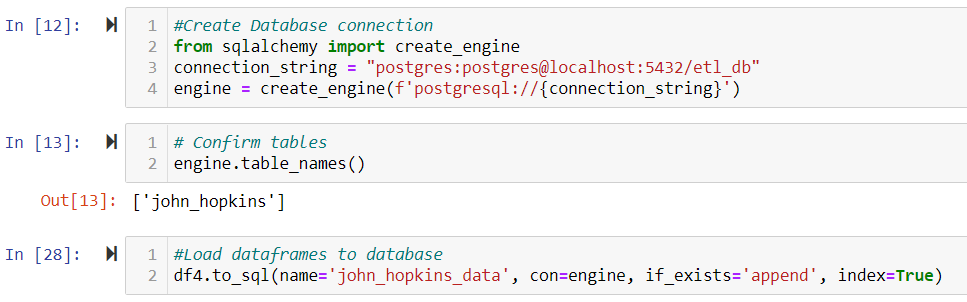
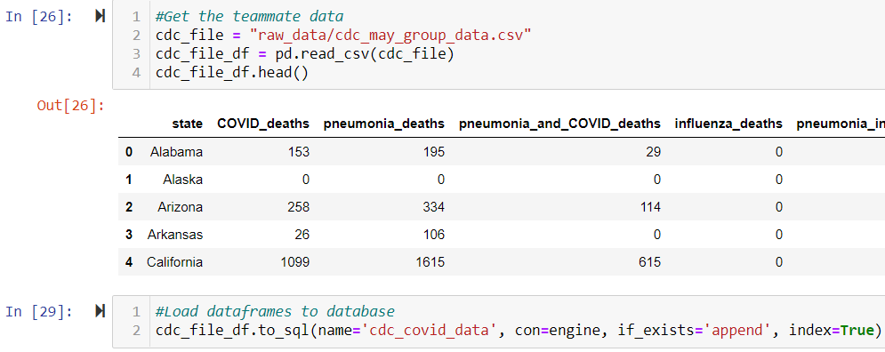
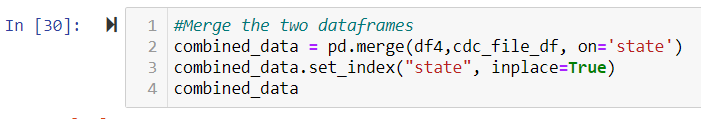

Extract:
Extracted the data from the following sources:1. https://data.world/associatedpress/johns-hopkins-coronavirus-case-tracker, where an embedded link on its overview page have led us to find the daily csv files on git hub.
2. downloaded 30 CSV files one by one by doing the following steps:
- a. Go to each daily dataset for April 20 to May 20.
- b. Place the cursor to the "Raw" button on the top right side of the dataset.
- c. Press "Alt" and then left click the "Raw" button.
- d. The whole CSV downloaded in the system automatically
- e. Saved to the designated folder where the jupyter notebook is also saved.
Transform:
The type of transformation needed for this data are executed in the following steps:
1. Dependencies for John Hopkins data are pandas, glob, and numpy modules on jupyter notebook. The we listed all files using glob from the CSV file local folder.
2. Use a generator expression to read the files, assign(), to create a new column, and concat Dataframes
3. Rename the index column from ‘Province_State’ to ‘state’ to align index data with my teammates file
4. Dropped the column for rows that contains another data type besides Nan
5. Drop rows that does not contain data
6. Replace all “NaN” cells with zeros
7. Change the data type of columns that contains numbers from object to float64 to be able to perform numeric calculations.
8. Groupped the data by ‘state’ by summing up the values.
9. Save the dataframe into CSV file as john_hopkins.csv
Merge:
1. Create database connection and load the dataframes
2. Get the teammate’s CSV file, convert to dataframe and load to my database
3. Merge the two dataframes
Load final tables to database:
1. Save the merged dataframes as CSV and load to database to be the final table for production.

This type of data was chosen due to the uprising numbers of COVID-19 deaths and infections. My partner and I are mothers who are concerned and looking to learn more on finding the right sources that can provide correct and organized data.